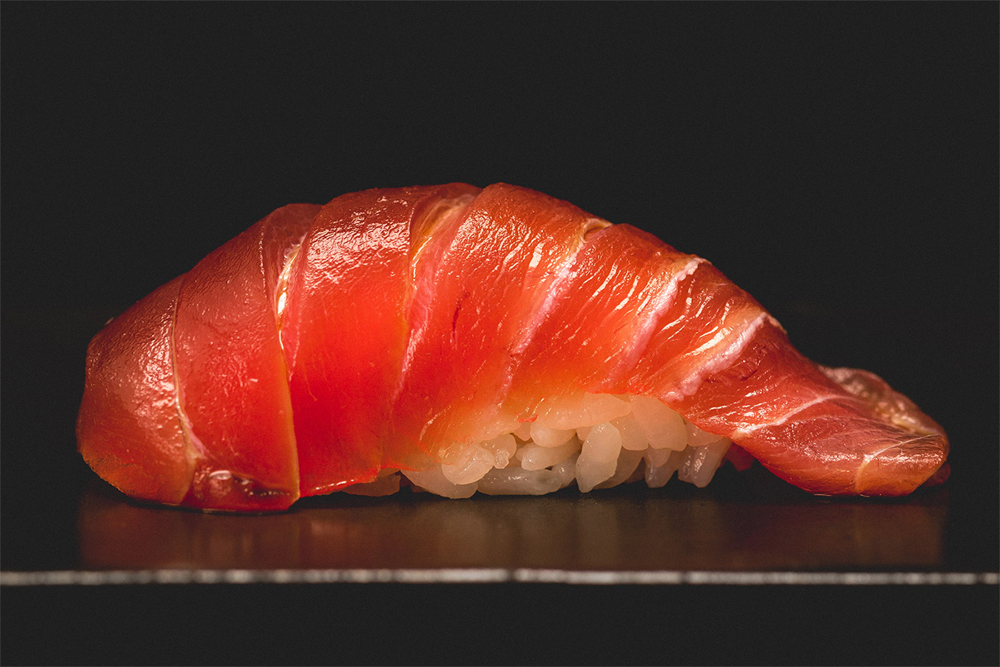

Sushi recipe

Description
Sushi is a Japanese dish of prepared vinegared rice (鮨飯, sushi-meshi),
usually with some sugar and salt, accompanied by a variety of ingredients
(ねた, neta), such as seafood, often raw, and vegetables.
Sushi is traditionally made with medium-grain white rice, though it can be
prepared with brown rice or short-grain rice. It is very often prepared with
seafood, such as squid, eel, yellowtail, salmon, tuna or imitation crab meat.
Ingredients
For the rice
- 300g sushi rice
- 100ml rice wine vinegar
- 2 tbsp golden caster sugar
For the Japanese mayonnaise
- 3 tbsp mayonnaise
- 1 tbsp rice wine vinegar
- 1 tsp soy sauce
For the sushi
- 25g bag nori (seaweed) sheets
Steps
- Pat out some rice. Lay a nori sheet on the mat, shiny-side down. Dip your hands in the vinegared water, then pat handfuls of rice on top in a 1cm thick layer, leaving the furthest edge from you clear.
- Spread over some Japanese mayonnaise. Use a spoon to spread out a thin layer of mayonnaise down the middle of the rice.
- Add the filling. Get your child to top the mayonnaise with a line of their favorite fillings - here we've used tuna and cucumber.
- Roll it up. Lift the edge of the mat over the rice, applying a little pressure to keep everything in a tight roll.
- Stick down the sides like a stamp. When you get to the edge without any rice, brush with a little water and continue to roll into a tight roll.
- Wrap in cling film. Remove the mat and roll tightly in cling film before a grown-up cuts the sushi into thick slices, then unravel the cling film.
- Layer over some smoked salmon. Line a loaf tin with cling film, then place a thin layer of smoked salmon inside on top of the cling film.
- Cover with rice and press down. Press about 3cm of rice over the fish, fold the cling film over and press down as much as you can, using another tin if you have one.
- Tip it out like a sandcastle. Turn block of sushi onto a chopping board. Get a grown-up to cut into fingers, then remove the cling film.
- Good appetit !